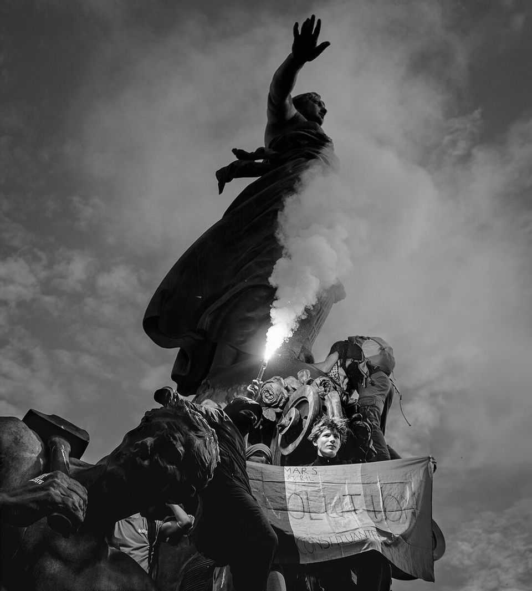

The agony of liberal Europe
Centrist rulers have fallen dangerously short—and are now paying the price

Oct 22nd 2026
“The first steps into the Unrest seem straightforward enough—anger at the fall of real wages, at capitalist aggression, at the unwillingness of Parliament; anger fomented by agitators...reason wars with instinct.” Few of those who mobbed French cities this week would recognise those words. But many would agree with George Dangerfield, the British-American journalist who wrote them. The demonstrators were consumed by rage. Rage at the failure of the state and against the floundering centrist politicians who govern. Rage at high prices and economic dysfunction. And for some, rage against the idea of centrist politics at all.
Dangerfield wrote about “the strange death of liberal England” in the years before the first world war. Some predict a similarly grim fate for liberal Europe today. Arson, mob violence, looting and mass protests show how much citizens despair of their leaders. France has a long tradition of the manif, but the violence unleashed by hooded and masked rioters across the country over the past weekend was unusually severe. Protests also flared in Belgium, Italy and Portugal. In looming elections, first in Spain next month, then in France and Poland next year, voters are poised to punish moderate parties—and in Italy the far right is outflanking the populist Giorgia Meloni, who has governed from the centre. In the wings wait more charismatic figures from the extremes, including Marine Le Pen in France and Alice Weidel in Germany.
Many in America and in Europe say the centre has only itself to blame. Donald Trump crows that Europe is on fire because its leaders spurned his advice, left their borders open and let millions of immigrants rush in each year, from Afghanistan, Algeria and Syria. Those on the MAGA right, such as Elon Musk, say growing Muslim populations pose the greatest threat. Some talk, apocalyptically and absurdly, of “civilisational erasure” or civil war. Even in Germany the chancellor, Friedrich Merz, said this week that high rates of migration and a failure to integrate the foreign-born are partly behind the sudden, violent upheaval. So has Hungary’s newish prime minister, Peter Magyar.
Their analysis is either craven or self-serving. Undoubtedly, many European voters also wish to curb immigration and asylum. But when it comes to the violent protests, the diagnosis is plain wrong. Instead the problems facing Europe’s centrists are more complex—and less easy to fix.
Even if some young protesters in France wear Algerian football shirts or chant pro-Palestinian slogans, the upheaval in Europe today is not about race or religion. Over 500,000 people marched in France on Saturday and they were largely unmasked and white. They were fired up, as in other countries, by the cost of living and poor public services. They want more fuel subsidies, more spending on schools, more handouts. Perhaps the largest group are aligned with the populist-left Jean-Luc Mélenchon, an ageing rabble-rouser and one-time Trotskyist, more akin to Bernie Sanders than an emir of ISIS.
Real violence did follow. But blame that on other factors, none to do with race. Mobs struck at public buildings, police cars and more. They also smashed and grabbed from luxury retailers, like Louis Vuitton, and small stores run by immigrants. The police failed to keep order, having earlier been accused of brutality against student protesters. And much of the violence was incited and orchestrated by anarchists, who have a revolutionary political agenda. Typical among them is a man arrested after the burning of a 19th-century town hall in Limoges, a white French citizen in his mid-30s.
Although the critics are wrong, Europe’s centrists do face real problems—and France shows how serious they are. The first is the fiscal bind that makes effective political action so hard. When Emmanuel Macron, the president, faced huge protests by the gilets jaunes in 2018-19, he could deploy billions of euros to placate them. Today, that is no longer possible. France is spending too much and growing too slowly—by just over 1% a year under Mr Macron.
This autumn, lawmakers will struggle to pass a budget that cuts the deficit by a feeble 0.4 percentage points, to an unsustainable 5% of GDP. And still the government may fall. France is so overborrowed, and markets have so little faith in its politicians, that spreads of French government bonds over German ones have soared to levels last seen during the euro crisis.
Instead of rising to this challenge, the centrists seem out of ideas. The Economist once cheered Mr Macron as a bold new standard-bearer for radical centrism. Today, while centrists huddle together for protection, all the energy is at the extremes. Surveys say over 80% of the French are pessimistic about their future, especially about their economy. Mr Merz is deeply unpopular and may be forced from office. His anti-migrant sniping reflects his inability to find the words and ideas to see off Ms Weidel and her party, the Alternative for Germany.
No wonder the centrists face an electoral walloping. Polls show that Pedro Sánchez, the centre-left prime minister in Spain, will probably be turfed out soon to be replaced by a coalition of the centre- and populist right. In France the riots—and the myth that immigrants were to blame—may lift Ms Le Pen of the populist-right National Rally into the presidency in May. Polls show that the violence boosted her this week. While Mr Macron jetted off on a trip to the Gulf, Ms Le Pen gave a presidential-sounding speech calling for public order.
The violence in France should jolt head-in-the-sand centrists to confront the consequences of failure. If their countries descend into strife, they will lose power. If they lose power, the European Union will choke, as the rest of the world races ahead. If bond markets seize up, financial contagion could spread. If EU countries indulge Vladimir Putin of Russia, he will only become more aggressive. Dangerfield was writing about a time when most people were ignorant of the catastrophe that lay ahead. Today’s liberals have no such excuse. ■